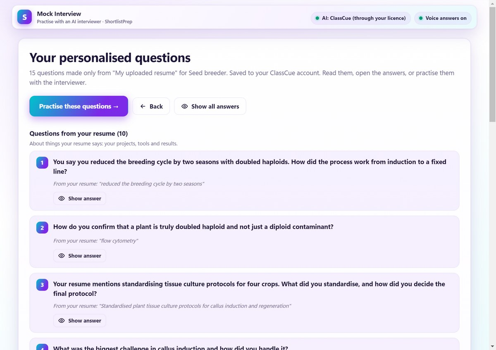
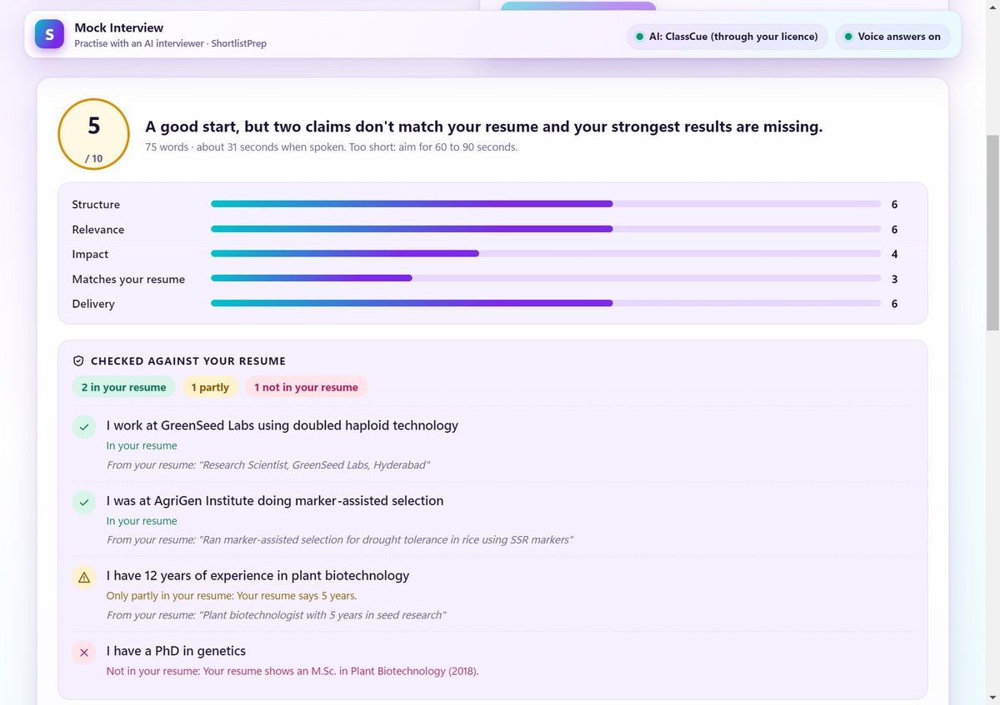
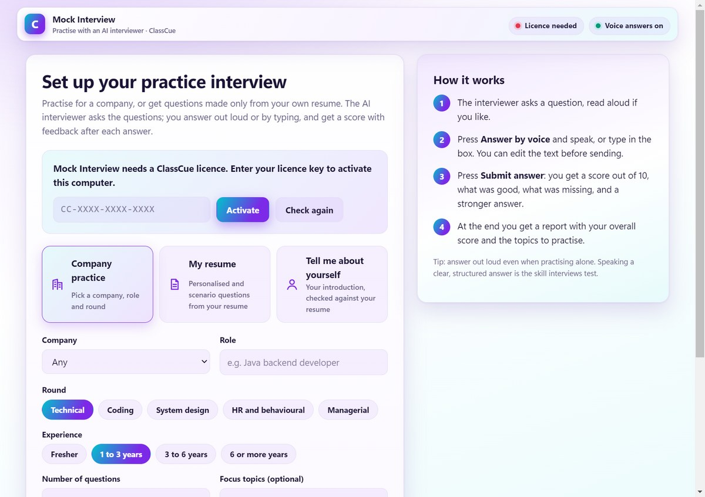
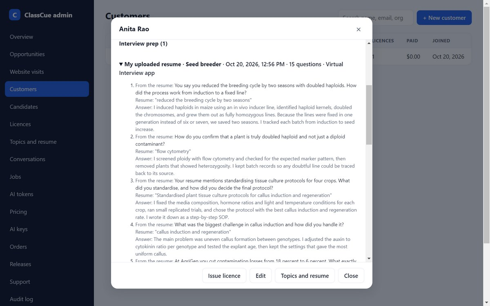

One platform that takes a job seeker from an ATS-ready resume, through the right openings, to interview practice and live interview support.
Most large employers use ATS software. A resume that is not written for it is rejected before a person reads it.
Generic job boards show the same IT roles to everyone. A plant biotechnologist or a teacher scrolls through jobs that are not theirs.
Candidates do not know their gaps for a role, stretch the truth in "Tell me about yourself", and freeze on follow-up questions.
Today these are solved by separate tools, or not at all: a resume checker here, a job board there, a coach for a fee that many cannot afford.
Everything is built on the candidate's own resume and profile. The AI uses their facts, and where it cannot find a fact in the resume it says so, instead of inventing one.
A candidate in agriculture, healthcare, teaching or finance gets jobs from their own industry. General job boards and many AI tools lean heavily towards technology roles.


Honest by design. Candidates stop over-claiming, and interviewers see consistent stories.
A Windows desktop app that listens to a question and shows a suggested answer in real time, fitted to the candidate's topics and resume.
Signed licences, a limit on computers per licence, trial and paid plans, and activation checked with our server.
Resume text is used only to personalise their own answers. AI calls go through our server, so customers never handle API keys.


1 ATS check and improved resume, 1 role-based resume, 2 AI job searches a month, Skill Gap Matrix on every job.
Unlimited ATS checks (fair use), up to 8 role-based resumes, cover letters, about 30 AI job searches and Insights.
Everything above plus interview coaching, the question bank with model answers, the introduction coach and a bigger AI allowance.
Plan subscriptions · token packs for heavy users · 90-day and Offer passes with live interview support · institutions and training partners.
Every plan sets a daily AI token cap, so the cost of each customer is known and bounded from day one.
Claims are checked against the resume, quotes must exist in it, and numbers that are not in it are flagged. Candidates trust the output.
Sector-aware job search and questions, not a technology-only tool.
Resume, jobs, gaps, practice and live support share one profile, so each step makes the next better.
Rupee plans from ₹0 to ₹599 a month, UPI payments, and a free tier that shows real value first.
Customers and revenue to date · funding amount and use of funds · team · timeline for the next milestones. Edit docs/presentation/deck.html and render again.
shortlistprep.com · From resume to offer letter, with AI